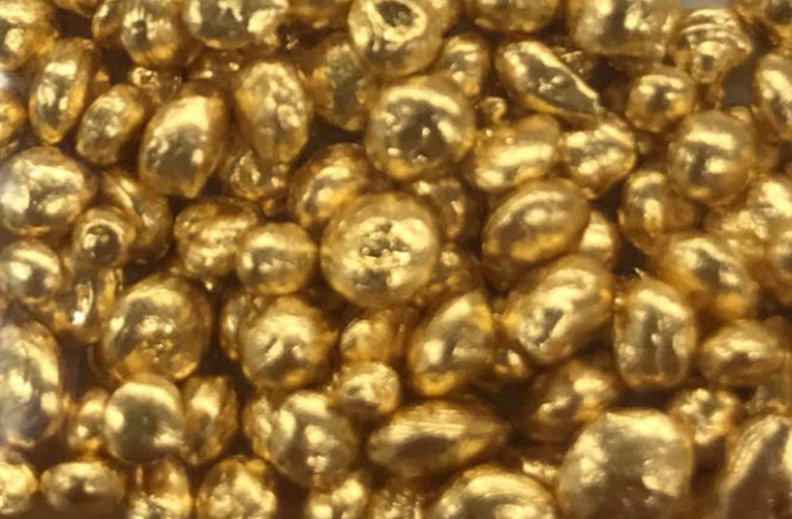
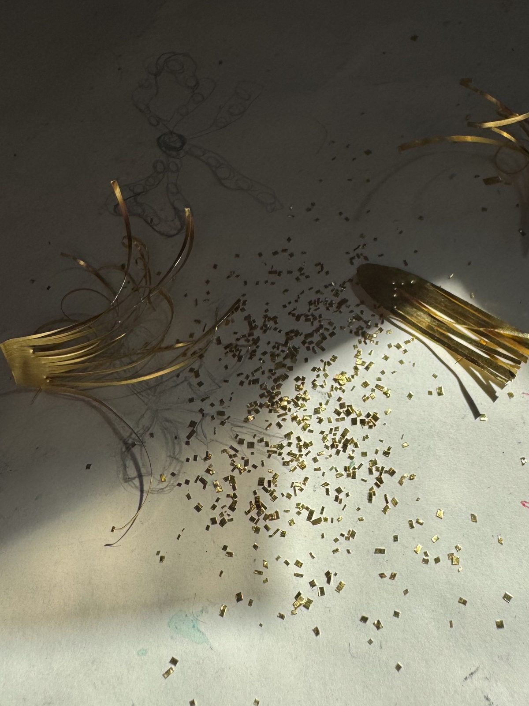
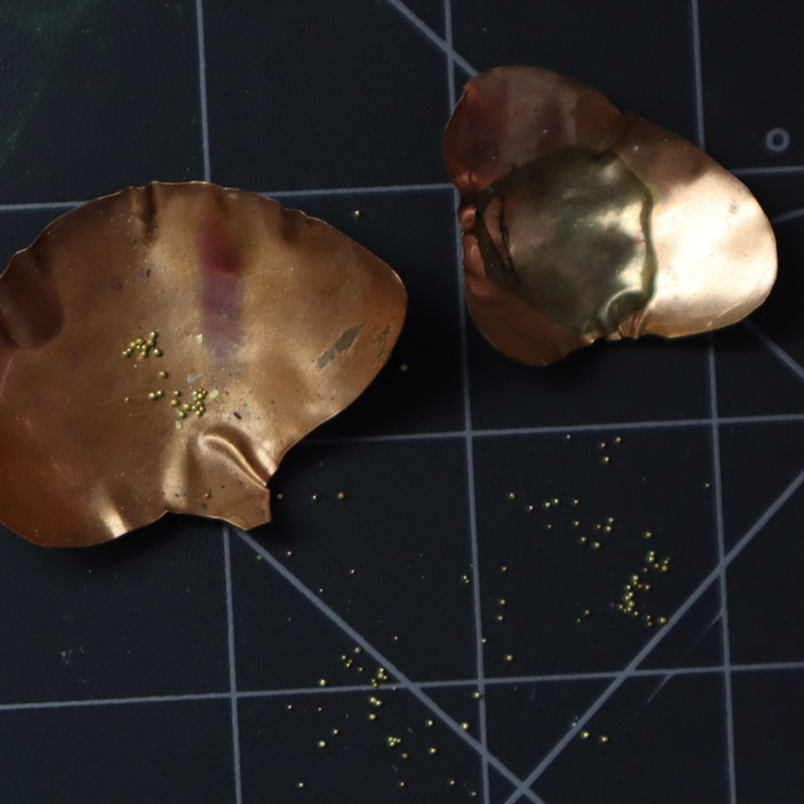
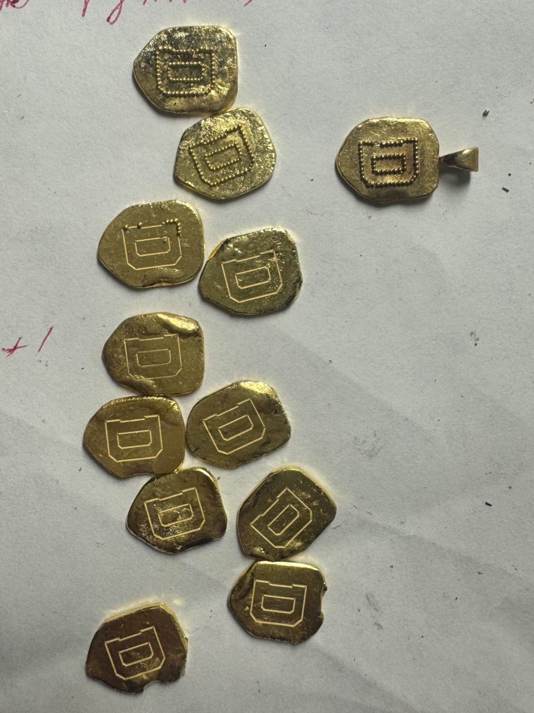
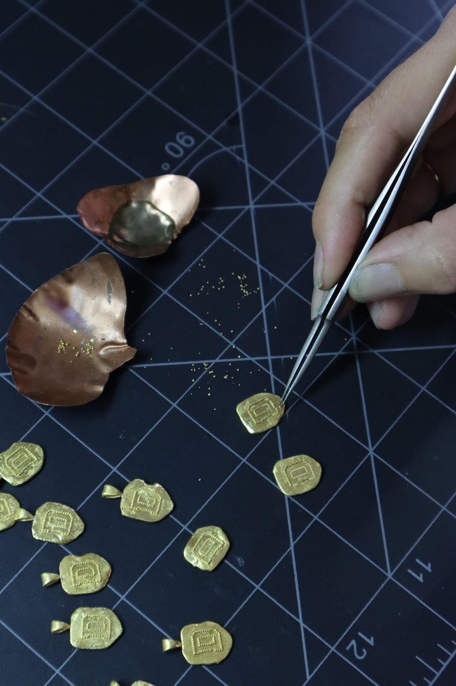
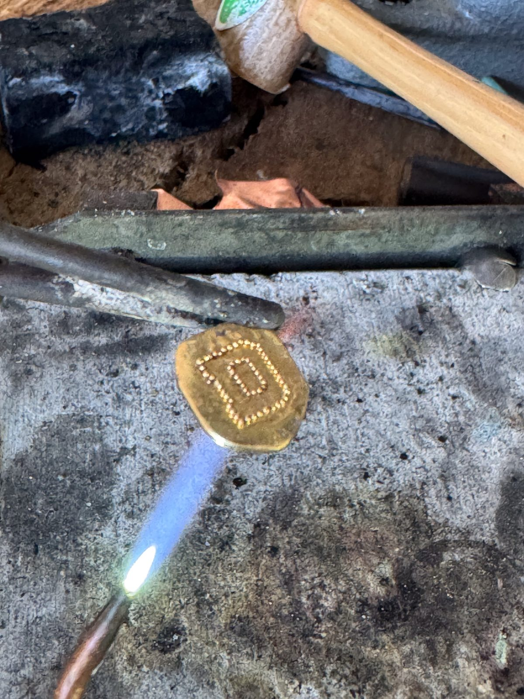

Gold granulation is one of the oldest metalworking techniques in the world, dating back roughly 4,500 years. Tiny spheres of gold are fused onto a gold surface without any visible solder, creating patterns that look almost like they were poured out of light. The Etruscans and ancient Greeks perfected it, and it is the technique at the heart of nearly everything I make in 22 karat gold.

People often ask how I actually do it. The short answer: slowly, by hand, and with very little room for error. Here is the process, step by step. Try it at your own risk, if you dare.
Step 1: Start With 24k Gold
It all starts with 24 karat gold, which I later alloy to 22 karat using a combination of silver and copper. I use more silver than copper, because too much copper makes the gold oxidize too easily and lowers the melting temperature of the surface too much. A recommended starting point is 8 parts silver to 2 parts copper, though you may experiment as you like. The added metals give the gold a little more strength while keeping the rich, warm color of high karat gold. It is also what makes true high karat granulation possible, just as it was for the ancient Greeks.

Step 2: Make the Granules by Hand
Every granule is handmade. I cut a flat sheet of the alloy into tiny squares and place them on a charcoal block tilted at an angle. As the flakes are heated, they ball up and roll off into a bowl of water as perfect little spheres. I make a few dozen to a few hundred at a time, depending on the design.


Step 3: Plan the Design Layout
Before a single granule is placed, the layout is planned out. One rule matters above all: the same alloy must be used for every part of the piece, including the base. Granulation requires heating the piece very close to its melting point, and if the granules and the base melt at different temperatures, the granules will melt away before they ever fuse. Granules also like to bunch up together, especially when wet (capillary action), so some designs, such as little flower clusters or triangles, are much easier to achieve than a straight line.

Step 4: Place Each Granule
Using fine tweezers, I place each granule one at a time and cover it with a powdered copper salt solution. This is the colloidal soldering method used by the ancient Etruscans and Greeks. Instead of conventional solder, the copper in the solution bonds the granules to the surface during heating, which is why the finished joins are so clean. The balance is delicate: too much copper salt can ruin or pit the surface.

Step 5: Fuse With Heat
Once every granule is set and the piece is completely dry, it is heated slowly until it glows red. I use a Smith mini torch with a soft flame on a low setting (for me, around a 3 or a 4). For flat, thin pieces I heat from the back, holding the work with heat-resistant tweezers in a third arm, on heat-resistant mesh, or on charcoal blocks, so that the heat stays even.
The piece is held at that red glow until the granules glow red as well, and a small flash signals that fusion has happened. This is the moment everything depends on. You have a fraction of a second between a granule that is slightly fused and one that has fully melted into the surface or is just a bit overdone, and judging it takes a lot of practice.

Step 6: Inspect and Refine
Finally, every granule is inspected to confirm it has fused. If any have not, the piece can be reheated, but very carefully, because overheating at this stage can undo hours of work. Only when every granule is secure does the piece move on to finishing, which usually means using a gentle brass brush to shine up the granules.
Why It Matters
Granulation cannot be rushed, mass produced, or cast. Each piece is made one granule at a time, which is why no two are ever exactly alike, and why a granulated piece in 22 karat gold is meant to be worn, passed down, and loved day after day. There is no risk of tarnishing. It is literally solid gold, a material that can survive in ocean water for millennia.
See the technique up close: the Gold Bee Necklace with a Yellow Diamond, the Gold Owl Necklace with a Pink Diamond, the Gold Angel Necklace, or The Dartmouth "D" Gold Medallion, available in the online boutique or in Hanover, NH at the Kyle Timothy Fine Art Gallery. For a piece designed around your own idea, see our bespoke process.